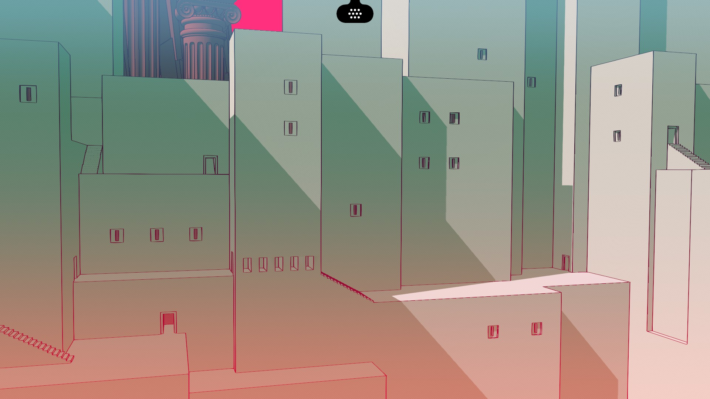

I Diari di Babele: 60 Giorni ad Hong Kong
Forse, il voler conoscere le persone e non i luoghi è il mio modo per scavalcare la sottile linea che separa il turista dal viaggiatore.
Sto facendo fatica a trovare le parole per raccontare questo mese.
Arrivato all'inizio del secondo piano, scorro le pagine del diario e non trovo più nessuna corrispondenza.
Inizio ad essere consapevole di quello che mi circonda. Finalmente sto iniziando a capire come muovermi anche senza guardare il diario.
I mille volti, su cui prima posavo curiosamente lo sguardo, sono diventati un blocco unico di persone.
Sono in questa zona che ormai pensavo di conoscere abbastanza, ma come spesso capita, qualcosa mi fa rivalutare i miei diari pieni di appunti:
Di colpo mi trovo questo ragazzo vestito da un noto personaggio locale parlare in una diretta video.
Il suo istinto, come il mio, lo porta a notare nella quotidianità una piccola stranezza.
Io.
Me lo ritrovo catapultato accanto con un'energia degna del personaggio che rappresenta e, in una lingua che palesemente non padroneggia, esclama: "Helo, where are you from?"
Io, come di consueto, "Italy, my man!". Il dialogo è partito e tutto prosegue nella sua normale stranezza. Anche questa serata ho una nuova serie di appunti da integrare.
Un triste pomeriggio nel mio ufficio, completamente assorbito dalle scartoffie, ricevo una richiesta: "wanna eat hotpot later mate?"
Se c'è una cosa che portavo con me ancora prima di arrivare qui, è che "condividere un pasto con qualcuno è vero bonding". Ma quello che non mi aspettavo era di essere adottato da un gruppo di persone del posto e essere portato in un ristorante dal chiaro sapore intimo misto a fumi al peperoncino.
Un'intimità, di gruppo.
Mi sono ritrovato in uno di quei posti dove vai col tuo gruppo di amici post esame a festeggiare o con la famiglia per un pranzo domenicale. Come vuole la tradizione, ci siamo messi a fare da contorno a questo grande pentolone in metallo con dentro del brodo bollente su cui, poi, avremmo dovuto cuocere cose al momento. Tutta la cena è stata così piena di informazioni che a malapena riuscivo ad appuntare parti casuali nel mio diario: modi di fare, cose da prendere, perché prenderle e i rispettivi sapori. Ogni mia domanda mossa dalla curiosità veniva presa, risposta e arricchita di dettagli. Il cibo, come poi mi hanno spiegato, non viene preso singolarmente ma si va tutti a prendere qualcosa per tutti.
La parte che più mi ha colpito, nonostante fossi nel vivo dell'umanità e convivialità di questo posto, è il fatto che il tavolo mi stesse spiegando come e cosa fare quasi come se facesse parte esso stesso della cena.
Usciti dal ristorante ci siamo concessi un giro, abbiamo raggiunto voci amiche e ci siamo uniti in una mescolanza di idiomi e culture ancora più grande.
Al loro fine serata, esce dalla mia bocca una cosa per me ormai automatica: "When you are at home, text me that everything is ok!".
La reazione disorientata della persona che mi aveva invitato, giusto per il tempo di una cena, nella sua stretta cerchia di amici mi ha spiazzato. Per cercare di colmare quel silenzio ho aggiunto una breve spiegazione sul perché lo avessi fatto. Un'oretta dopo mi arriva un audio "Hey Mattia, we are back home everything is ok, Thank you!".
Ho provato, a mio modo, a ridare qualcosa a tutta quella dimostrazione d'affetto che avevo ricevuto.
Realizzo ora. Il secondo piano della torre è stato questo: un costante lasciar parlare qualcosa che sta dietro i glifi. Da ossessivamente cercare la traduzione letterale sono passato a capirne, finalmente, l'intenzione umana.
Per chi volesse seguire le mie avventure da vicino, trova questo canale telegram a cui accedere.
Se vi salvate il link potete vedere anche senza avere telegram.